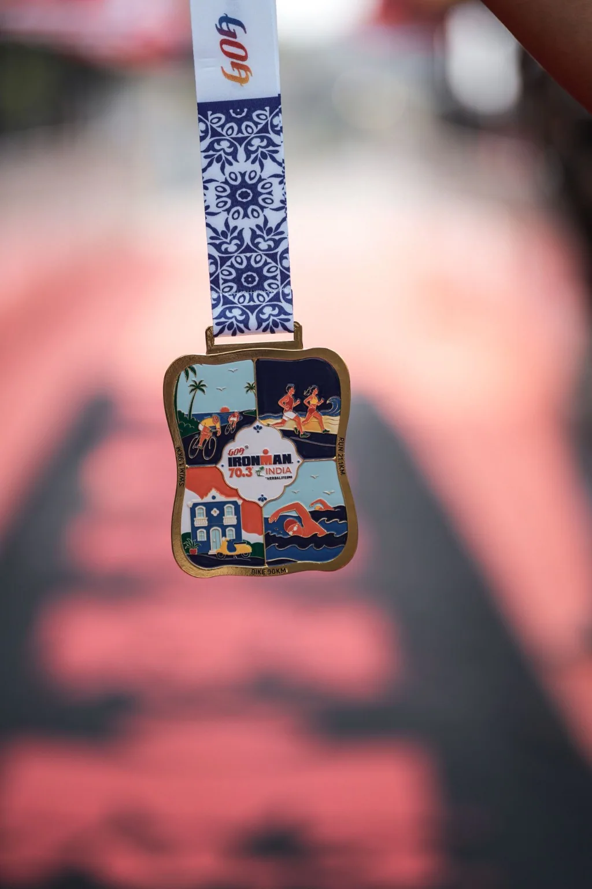

My Athlete Legacy / 05
Medals & Certificates
The records and keepsakes behind the milestones.
IRONMAN 70.3 Goa 2026
Preview rendered from the original official PDF. Open or download the certificate below.


The Border · 6–7 December 2025
Border Ultra · 100 km
15:45:51 · Overall rank 306 · Male category rank 257